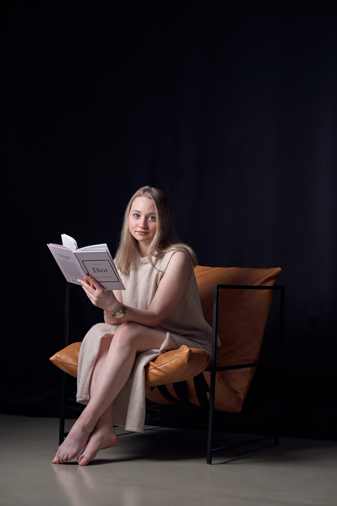
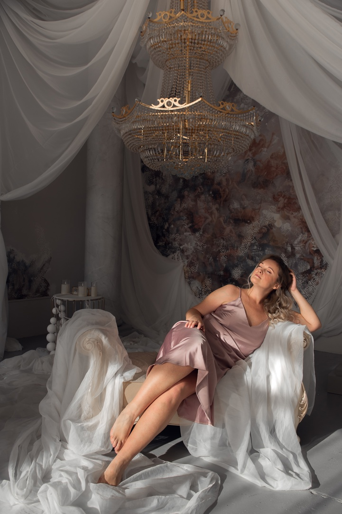
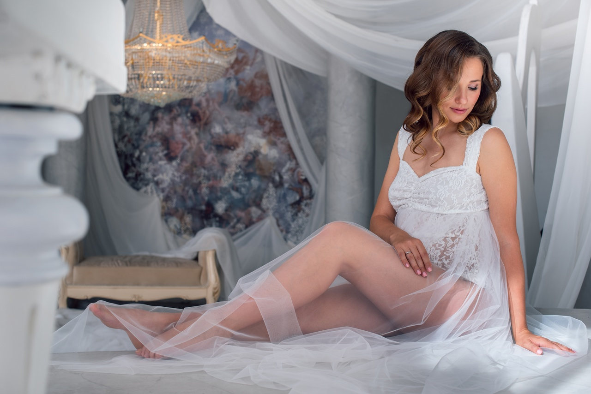

До курса у Анны Рахштейн из Санкт-Петербурга не было дохода и клиентов. Она фотографировала бесплатно на условиях TFP-съемок. После изучения курса её доход постепенно начал расти: сейчас она зарабатывает около 30 000 рублей в месяц, обслуживая 4-5 клиентов.
Анна планирует обновить профессиональную технику и продолжить развивать свое хобби, привлекая новых клиентов с помощью рекламы.
Мы взяли у нее короткое интервью:
— Аня, поделись, что было до курса, какой средний доход был в месяц? Сколько клиентов?
— До курса я была примерно на уровне ниже плинтуса. Я только прошла обучение. Доход 0 руб. 00 коп. Точнее сказать еще доплачивать приходилось за дорогу и аренду оборудования на съемках в студии. Клиентов 0. Только tfp съемки – это тестовые бесплатные съемки с моделями.

— Какие сложности были во время обучения на нашем курсе? Насколько сложно было учиться? За сколько прошла обучение?
— Сложность только в моей лени. Так все интуитивно понятно). Изучала почти 2 года.
— Ты ведь самостоятельно проходила? Как думаешь, с куратором было бы эффективнее? Быстрее?
— Наверное да, было бы быстрее) Вопрос экономии). Когда я покупала курс, денег не было совсем. Хотя, если бы курс прошла быстрее, то и зарабатывать бы начала быстрее. Но теперь, как есть)
— Какие сейчас делаешь действия? Как часто пишешь посты? Запускаешь ли рекламу
— Сейчас изучаю более подробно момент координации работы с ИИ. Так как мне очень понравилось как были структурированы мои наброски по рекламным текстам с помощью чата GPT.
Посты пишу пару раз в неделю. Прямо сейчас кручу рекламу и тестирую разные объявления на разные аудитории. Но пока не все пробую так как в группе пока мало подписчиков всего 80 чел, хотя начинала курс вообще с 0.

Так же сегодня начала изучать новый рекламный кабинет в ВК. Буду там тестировать. Ну и зарабатывать, конечно)
— Сейчас в среднем сколько клиентов в месяц?
— В среднем, 4-5 съемок в месяц регулярно.
— Расскажешь как изменилась твоя жизнь за это время? Что чувствуешь, что-то может купила, о чем мечтала, съездила в отпуск?
— Пока результаты не впечатляющие, но они растут с каждым месяцем по чуть-чуть.
Суммы не аховые. Много чего еще нужно из оборудования. Поэтому все в развитие.
Но уже получилось докупить профессиональный свет для фотосессий)
— Профессиональный свет – это круто)) Что-то еще? Может по мелочи как-то поменялась жизнь, изменилось качество в целом? Клиенты стали другие приходить? Может те, каких ты всегда хотела?
— Да, у меня в данный момент заработала сарафанка. Начали приходить юридические лица. Теперь другая проблема – как все успевать.
Общий чек повышается каждый месяц по чуть-чуть)

Надеюсь к лету обновить парк техники. Фотоаппарат, объективы, докупить еще свет.
— Все, остался только вопрос, сколько сейчас зарабатываешь? Сколько в среднем в месяц? Сколько клиентов? А вот примерно сколько за год было прошедший заработано?
— За прошлый год 60 000 рублей в общей сложности за весь год.
В этом году в месяц от 30 000 рублей от 4-5 съемок.
Пока такие суммы. Но для меня это огромный прогресс. Ибо для меня это, пока что, всё еще хобби.
— Аня, спасибо тебе за ответы. Рада, что есть успехи! Пусть в этом году они будут еще больше!